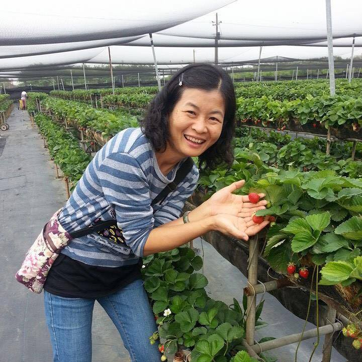

張家芸小姐
高雄六龜享家蔬果園
張家芸小姐本來在金融業裡工作，但是因為工作相當忙碌使身體開始健康出狀況，加上心疼公公婆婆務農的辛苦，決定回到高雄六龜幫忙。
為了能夠種出可以吃得健康安心地蔬果，張家芸不斷地上課，增進自己的農業知識。考取農藥管理人員證照，因為對農藥地了解，讓他更堅持自己的自然農法!過去一年裡也積極參與農業局開的課程、農改會、農會等等的課程，學習有關無毒栽種的知識。
自然農法與傳統灌型的耕作方式相比，面臨比較低的產量和較高的成本。當張家芸帶著我們參觀蔬果園，看著整棵因為生病而都不能採收的芭樂樹，或這因為吹起的暖風而造成裂果的蓮霧，農夫們所面對的挑戰真的很多!另外，蔬果園中也可以看到一片片的稻田，原來都是用心良苦。種稻米所可以產生的枯草桿菌，在輪作的過程中作為生物防治的方法。
這麼多的努力，都是因為張家芸堅持自己的自然農法，堅持讓每一個享家蔬果園的蔬果都可以吃的健康安心！